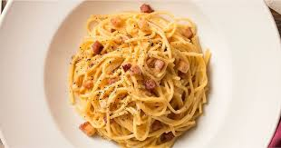

receitas simples para você!
carbonara leva só bacon, ovos, queijo parmesão e a água do cozimento para acertar o ponto.
200 g de macarrão espaguete (ou outra massa longa de grano duro)
½ xícara (chá) de bacon em cubos (75 g)
¼ de xícara (chá) de vinho branco
2 ovos
2 gemas
½ xícara (chá) de queijo parmesão ralado
sal
pimenta-do-reino moída na hora a gosto
Cozinhe o macarrão até ficar al dente. Misture ovos e parmesão. Doure o bacon, adicione vinho e desligue. Junte o macarrão quente ao bacon, adicione a mistura de ovos e mexa até formar um creme. Use um pouco da água do cozimento para ajustar o molho. Sirva com pimenta a gosto.
A torta de banana banoffee, conhecida por suas camadas irresistíveis de sabor, é uma sobremesa irresistível que encanta os paladares.
200 g de bolacha maisena.
4 bananas caturras maduras.
1 pote de nata.canela em pó a gosto.
100 g de manteiga amolecida.
2 latas de leite condensado.
4 colheres (sopa) rasas de açúcar.
achocolatado em pó a gosto
Faça uma farofa com a bolacha de maisena e manteiga. Espalhe somente no fundo de um refratário. Fatie as bananas caturras no sentido comprido. Coloque os leites condensados em uma panela de pressão por 35 minutos. Deixar esfriar. Bata a nata e o açúcar na batedeira até virar um creme. Depois de frio, espalhe o leite condensado sobre a massa na forma. Cubra o leite condensado com a banana fatiada.Sobre a banana, espalhe o creme da nata.Alise bem e com uma peneira fina, polvilhe com chocolate em pó e um pouco de canela.